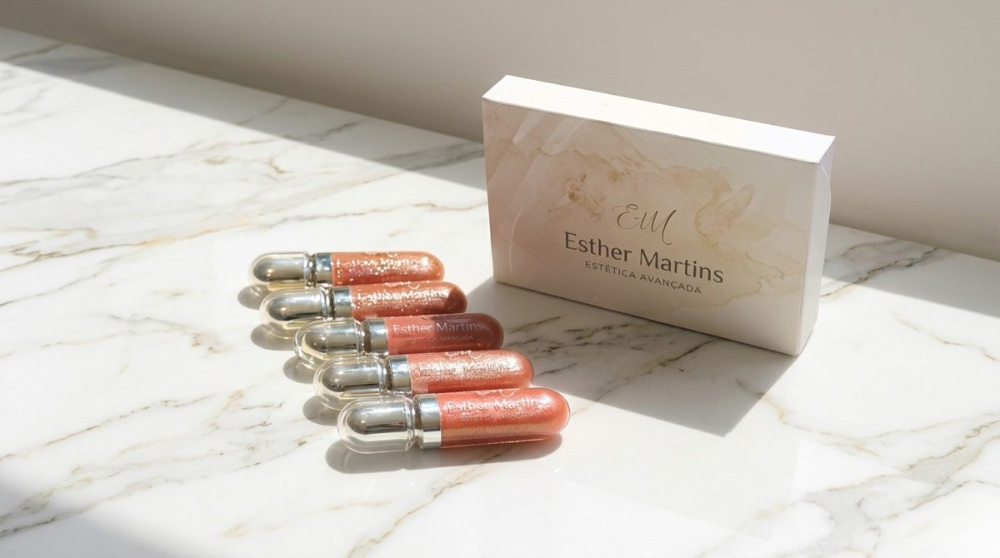
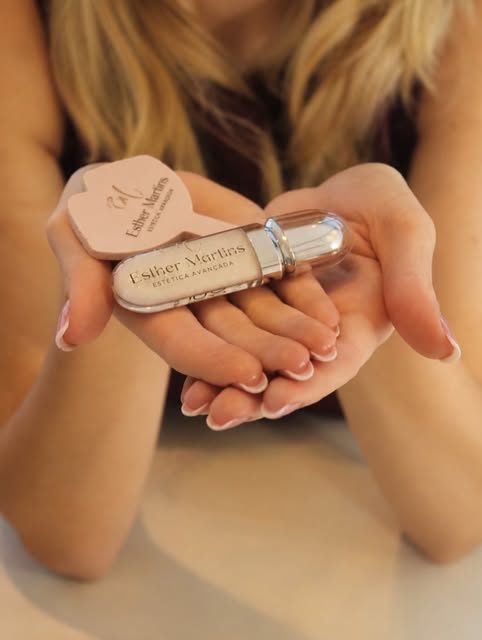

Protocolos de pele
Protocolos personalizados para cuidar da saúde da pele, prevenir sinais e revelar uma aparência mais luminosa e equilibrada.
Tratamentos personalizados para cuidar, prevenir e valorizar a sua beleza, com técnica, estratégia e um olhar atento para a individualidade de cada pele.
Há 7 anos escolhi a estética como forma de unir conhecimento, técnica e cuidado com pessoas. Acredito em uma estética que respeita a individualidade, valoriza a naturalidade e busca resultados que façam sentido para cada pele.
Cada pele tem uma história, necessidades e objetivos diferentes. Por isso, todo tratamento começa com uma avaliação: é ela que define o protocolo certo para você.
Atualização constante em cursos e congressos da área.
Atendimento individual, com hora marcada e sem pressa.
Resultados que realçam quem você é, sem exageros.
Cuidado personalizado, técnica e naturalidade para valorizar a sua beleza.
Protocolos personalizados para cuidar da saúde da pele, prevenir sinais e revelar uma aparência mais luminosa e equilibrada.
Higienização profunda, extração cuidadosa e hidratação para uma pele renovada, sem agredir a barreira cutânea.
Estímulo à produção natural de colágeno para melhorar firmeza, textura e qualidade da pele de forma progressiva.
Hidratação e reposição de volume com resultado natural, respeitando os traços e a harmonia do rosto.
Cuidado e realce dos lábios para mais hidratação, contorno e cor, sempre com naturalidade.
Redução de inchaço e retenção de líquidos, inclusive como apoio na recuperação pós-operatória.
Não sabe por onde começar? A avaliação é o primeiro passo.
Quero uma avaliação

A linha de gloss com a assinatura da Esther, para levar o cuidado com os lábios para o dia a dia, com brilho, conforto e acabamento elegante.
Quero conhecer as coresConversamos sobre seus objetivos, histórico e rotina, e analiso a sua pele com calma.
Você recebe a indicação dos procedimentos certos para a sua pele, sem excessos.
Orientações de cuidados antes e depois de cada sessão e acompanhamento da sua evolução.
Escolha o procedimento e veja como se preparar e como cuidar da pele depois.
Estas são orientações gerais. Na sua sessão, você recebe as recomendações específicas para o seu caso.
"Desde a primeira avaliação me senti muito segura com a Esther. Ela explicou tudo com cuidado e o resultado ficou super natural. Minha pele está muito mais bonita e saudável!"
"Adorei o atendimento da Esther! Ela foi muito cuidadosa, explicou cada etapa e entendeu exatamente o que eu queria. O resultado ficou natural e fez toda diferença na minha autoestima."
A avaliação é sem compromisso. Conversamos sobre seus objetivos, histórico de saúde e rotina de cuidados, analiso a sua pele e indico o protocolo mais adequado para você.
O valor depende do protocolo indicado para a sua pele e do número de sessões. Na avaliação você recebe o plano completo com os valores, sem surpresas.
A maioria causa apenas um leve desconforto. Cada etapa é explicada antes e o seu conforto é prioridade durante todo o atendimento.
Alguns tratamentos, como a limpeza de pele, mostram resultado logo após a sessão. Outros, como o bioestimulador de colágeno, têm resultado progressivo ao longo das semanas.
Alguns procedimentos não são indicados durante gestação, amamentação ou com o uso de certos medicamentos. Por isso a avaliação inclui uma ficha de saúde completa antes de qualquer tratamento.
Na Rua Deputado Heitor Alencar Furtado, 3870, em Curitiba. O atendimento é com hora marcada, agendado pelo WhatsApp.
Faça uma avaliação sem compromisso e eu indico o melhor procedimento para você.
Agendar pelo WhatsAppOs dados informados são utilizados apenas para agendamentos e comunicação com as pacientes. Informações de saúde e fotos de acompanhamento são tratadas com sigilo, conforme a LGPD, e nunca são compartilhadas sem consentimento. Fotos de resultados só são divulgadas com autorização expressa da paciente.